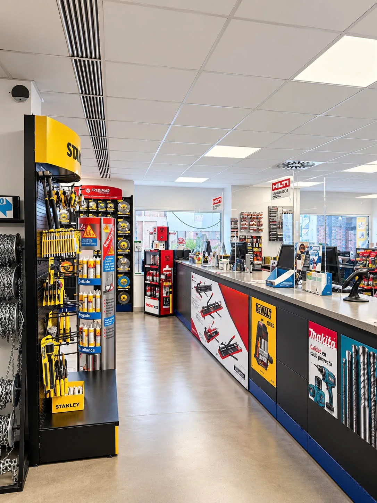

Cemento y áridos
Cemento, mortero, yeso, arena y grava para cualquier fase de obra.
Catálogo
Cemento, mortero, yeso, arena y grava para cualquier fase de obra.
Tornillería, fijaciones, herrajes y consumibles para el trabajo diario.
Herramienta manual y eléctrica para trabajar con precisión y seguridad.
Pinturas, barnices, brochas y soluciones de acabado interior y exterior.
Tuberías, válvulas y accesorios para instalaciones de agua y desagüe.
Sistemas de remate y ventilación Ventum para cubiertas.
Guías de mostrador
Cuatro consultas habituales del almacén. Lo que conviene mirar, medir y traer antes de elegir.
En el mostrador
Una foto de cerca y otra del conjunto ayudan a explicar qué quieres renovar.
Si hay humedad, consulta su origen antes de decidir el acabado. Pintar encima no explica por qué aparece.
Cada trabajo empieza por entender bien el material.
Biblioteca técnica
Aplicaciones, compatibilidades y documentación. Consulta la referencia exacta en la fuente del fabricante.
Cuadernos de aplicación, guías técnicas de obra y muestrarios de color. Filtra por tipo de documento para encontrar el que necesitas.
Consulta familias de fijación y referencias. La elección depende del soporte y del uso previsto.
Busca el producto concreto para revisar aplicaciones, limitaciones y documentación disponible.
Descargas del fabricante: manual de instalación, detalles constructivos y certificaciones. Confirma la edición aplicable a tu sistema.
Comprueba referencia, fecha de revisión y uso previsto. Estos enlaces abren una nueva pestaña y no confirman disponibilidad en el almacén.
Soluciones de obra
Organizamos el catálogo alrededor del trabajo real. Así resulta más fácil comparar, elegir y preparar el pedido completo sin dejar cabos sueltos.
Preparamos el suministro por fases para que la obra avance sin llenar el espacio de material antes de tiempo.
Soluciones compatibles con lo que ya existe, desde la preparación del soporte hasta el acabado final.
Reposición ágil de consumibles, herramienta y ferretería para equipos que no pueden parar.
Servicio profesional
Un buen suministro no consiste solo en cargar material. Consiste en entender la fase del trabajo, anticipar incompatibilidades y acordar una entrega que encaje con el equipo.
Lunes a viernes, sin interrupción
Coordinamos material y plazos
Antes, durante y después de comprar
Productos pensados para durar
Preguntas de mostrador
Lo esencial para organizar tu compra y tu visita al almacén. Si tu caso tiene algún detalle más, cuéntanoslo.

Sí. Cuéntanos qué quieres resolver y trae una foto, una medida o la referencia de la pieza. Las familias del catálogo también ayudan a orientar consultas de reforma y mantenimiento.
La web presenta familias de producto. Para confirmar una referencia, su disponibilidad y su precio, consulta con el almacén antes de desplazarte.
Una lista con cantidades y unidades es un buen punto de partida. Añade el uso previsto, las referencias que conozcas y la fecha orientativa. Si aún no tienes todo decidido, una foto y unas medidas ayudan a empezar.
Este mapa es de Google. Si lo muestras, tu navegador se conecta con Google, que recibe tu dirección IP y las cookies suyas que ya tengas, y puede tratarlas en Estados Unidos. Más información · Privacidad de Google (se abre en otra pestaña)
Visítanos
Estamos en Castellón, con horario ininterrumpido de lunes a viernes para que puedas organizar la recogida sin cortar la jornada por la mitad.